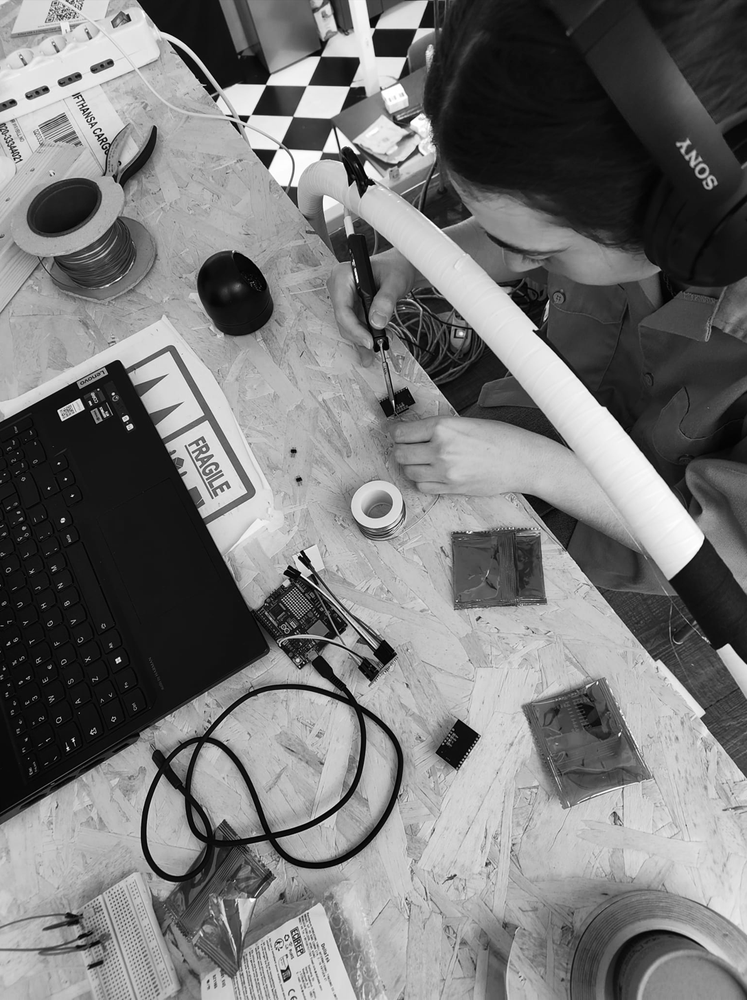
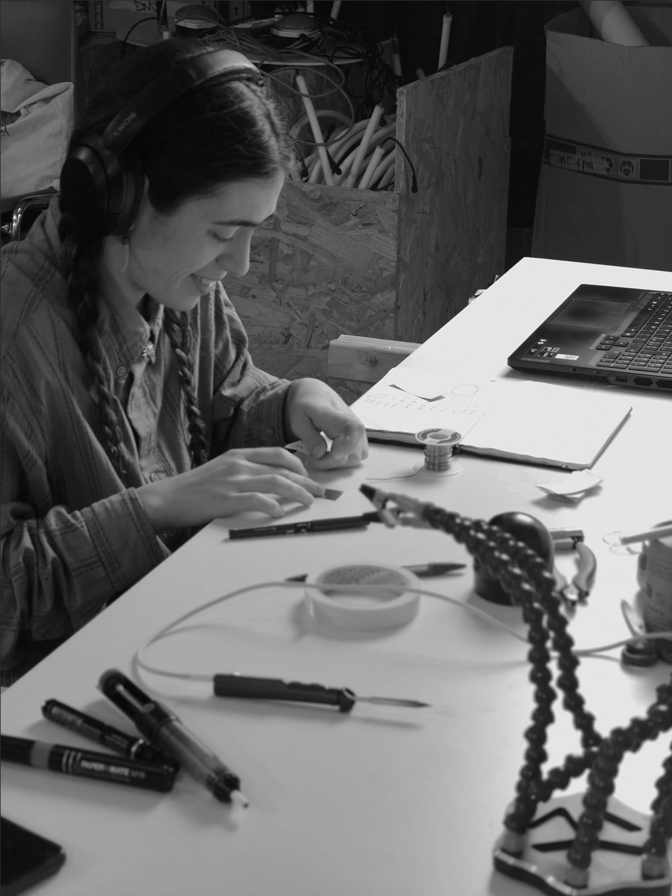
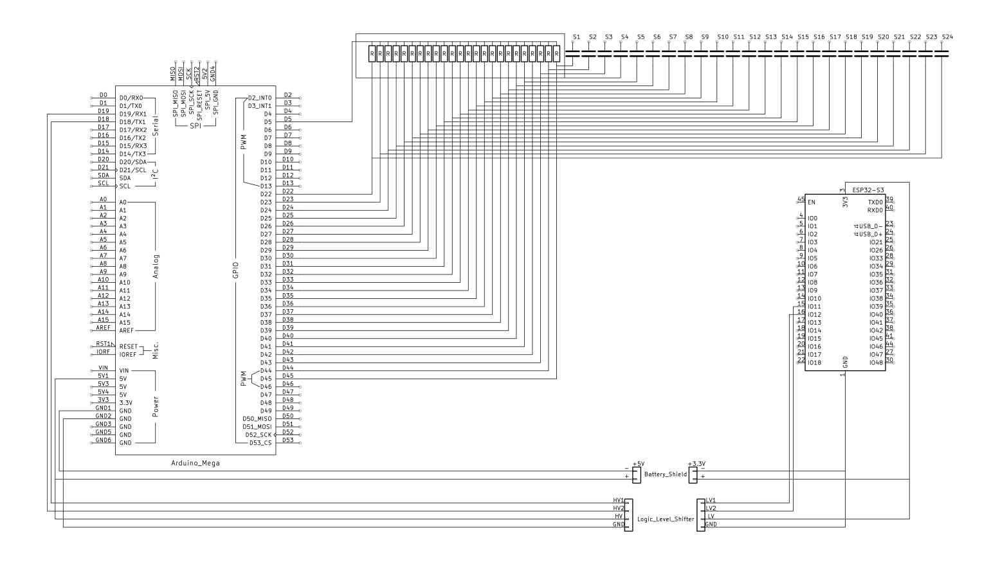

étude.
> interaction design
> contemporary circus
> physical computing
> autoethnographic research
étude. is a research project investigating the integration of interactive systems within aerial hoop practices, exploring the possibilities emerging from the encounter between Interaction Design and Contemporary Circus.
The project was developed through an autoethnographic approach, where physical practice and bodily memory became primary tools for analysis, reflection, and design. The research focuses on the relationship between body, object, and environment, observing how movement, perception, and meaning emerge through the interaction between performer and apparatus.
The aerial hoop was selected as a case study not only because of its structural and performative characteristics, but also because of my long-term personal practice with the apparatus. This proximity made it possible to investigate the system from within, using embodied experience as a form of situated knowledge.
The research began with a broader reflection on the role of design within performative practices and on the possibility of establishing a dialogue between technological systems and contemporary circus languages without reducing performance to a purely technical exercise.
Particular attention was given to the idea of the apparatus not simply as a passive tool, but as an active component capable of shaping gestures, behaviours, perception, and dramaturgical relationships. Within contemporary circus, the apparatus no longer functions exclusively as an object to dominate technically, but as a partner participating in the construction of meaning.
The project investigates how interactive systems can extend this relationship, allowing the apparatus to respond to the performer through real-time outputs generated from physical interaction.
The initial phase of the research focused on the analysis of the relationships between body, object, and environment. Through visual notation, movement observation, and the study of an existing aerial routine, I mapped different relational parameters emerging during performance.
The analysis identified contact as the central element of the interaction. Rather than considering movement as abstract motion data, the project approached touch as a trace of a relationship unfolding over time between body and apparatus.
Four primary parameters were selected for mapping: the presence or absence of contact, its symmetry, permanence over time, and vertical position along the apparatus.
These variables were translated into data through a capacitive sensing system integrated directly into the aerial hoop. The prototype was designed to detect touch in real time and transform it into audiovisual outputs, opening new possibilities for dialogue between movement and response.
The technical development involved extensive experimentation with capacitive sensing technologies, Arduino microcontrollers, MPR121 breakout boards, copper tape electrodes, wireless communication systems, and real-time audiovisual software environments.
Particular attention was dedicated to the structural and electrical complexities introduced by the metallic nature of the aerial hoop itself. Multiple iterations were required to stabilize the capacitive readings and preserve the apparatus' mechanical freedom during performance.
The final prototype integrates custom-built electrodes distributed along the hoop, connected to an Arduino-based system capable of transmitting sensor data wirelessly to TouchDesigner, where the interaction is translated into real-time visual outputs.
The research process also involved the analysis of existing case studies investigating interactivity in circus arts through different approaches: interfaces embedded within the apparatus, wearable technologies integrated into the performer's body, and markerless motion capture systems observing movement through the environment.
These references helped frame the project within a broader landscape of emerging hybrid practices between performance, computation, and embodied interaction.
Rather than treating technology as an external layer added onto performance, the project attempts to imagine a form of coexistence in which the digital system becomes structurally and dramaturgically embedded within the apparatus itself.
The goal was not simply to make movement interactive, but to explore how interactive systems might alter the way movement is perceived, constructed, and imagined during performance.
Within this perspective, data is not intended as a neutral measurement of movement, but as the manifestation of a relationship: an attempt to render visible the perceptual and intentional dimensions crossing the interaction between body and object.
The project ultimately reflects on how interaction design can participate in the creation of performative experiences, not by replacing physical practice, but by opening additional spaces for perception, listening, and meaning-making within contemporary circus.
designed in 2026


